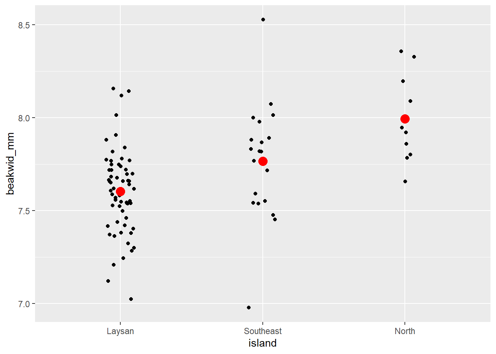
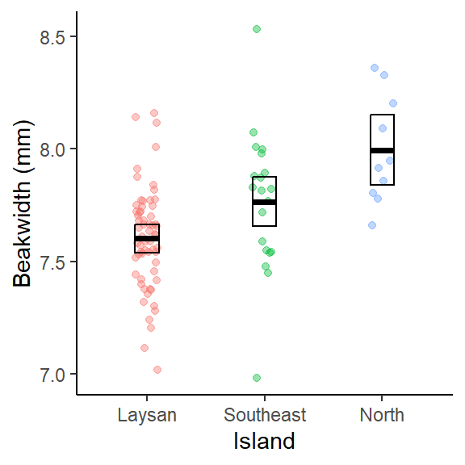
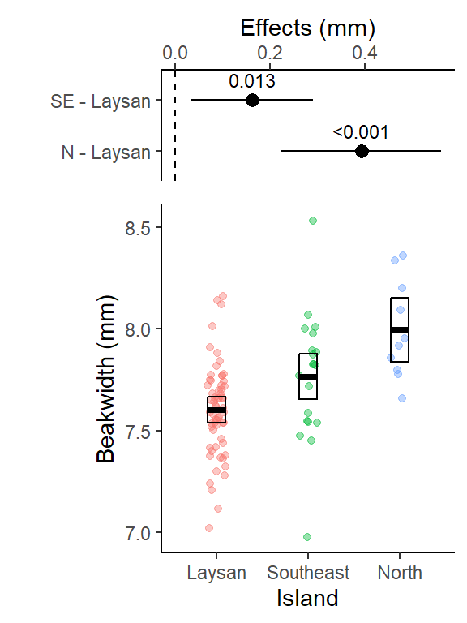

# load tidyverse
library(tidyverse)
# load tidymodels package (to use functions in broom package)
library(tidymodels)
# load skimr package - to use skim() function
# for descriptive statistics
library(skimr)
# load emmeans package: "estimated marginal means" package
#install.packages("emmeans")
library(emmeans)
#load cowplot package
# used to combine multiple ggplots into a single figure
library(cowplot)Week 9 - Comparing more than 2 means (traditionally one-way ANOVA)
Linear model w/ a categorical X (explanatory) variable (Comparing more than 2 means)
Load Packages
The tidyverse package is actually a collection of multiple R packages https://www.tidyverse.org/packages/ including the ggplot2 package (for plotting) and dplyr package (for organizing and summarizing data). And you can load these (and others packages in the tidyverse) all at once using library(tidyverse).
The ggplot2 Package we will use primarily for making plots (and is part of the tidyverse) has great help pages: https://ggplot2.tidyverse.org/reference/index.html
The dplyr Package we will use for “data wrangling” (e.g., organizing, summarizing) and it also has (not as extensive) help pages https://dplyr.tidyverse.org/ (plus cheat sheets RStudio > Help > Cheatsheets)
The broom Package is loaded/installed as part of tidymodels meta-package (similar to tidyverse). More information/examples of broom package functions can be found here: https://broom.tidymodels.org/articles/broom.html
The emmeans Package will be used to output means, 95% CIs, p-values and other statistics from specified lm() objects
Lots of vignettes here that demo what the package can do: https://cran.r-project.org/web/packages/emmeans/index.html
This one reviews the basics: https://cran.r-project.org/web/packages/emmeans/vignettes/AQuickStart.html
The cowplot Package will be used here to combined multiple ggplots into a single figure. But it also contains functions for all sorts other plotting purposes (some cool/useful, others I would not necessarily advise using):
General modeling strategy:
Background of Data Set
The Laysan Finch (Telespiza contans), a species in the Hawaiian honeycreeper radiation, is endemic to Laysan Island in the Northwest Hawaiian Islands. Early last century rabbits, introduced in 1903, devoured the island’s vegetation and caused the near extinction of the Finch (and extinction of several other bird species). After the elimination of rabbits in 1923, the Finch population recovered. Concern about the species’ vulnerability to such catastrophes, however, led the U.S. Fish and Wildlife Service to establish additional populations at Pearl and Hermes Reef (also in the Northwest Hawaiian Islands). A few birds were introduced to Southeast Island at Pearl and Hermes in 1967, and by the early 1970s several other of the small islands of the atoll had been colonized (including North Island also in this data set).
Dr. Sheila Conant (University of Hawaii Professor) and her students have been studying Laysan Finches since the 1980s. One question of great interest has been whether the populations at Pearl and Hermes have evolved differences from the source population on Laysan Island (see Conant, C., 1988, “Geographic variation in the Laysan Finch (Telespyza contans)’, Evolutionary Ecology 2:270-282). Of particular interest is whether the beak morphology of the birds in the translocated populations differs from that of birds on Laysan; if so, this could represent an evolutionary response to the marked differences in the size and hardness of the main food (seeds) between Laysan and North and South East Islands in the Pearl and Hermes Atoll.
The data provided here are from a morphological study by Dr. Conant and Marie Morin in the 1980s. For simplicity and to avoid confounding factors, this data considers only the beak widths of adult female birds captured in 1987. On Southeast Island, North Island (both islands in the Pearl and Hermes Reef atoll complex) and Laysan Island birds were netting or trapped then measured. “Beak width” is the width of the upper mandible at the distal end of the nares perpendicular to the mouth line, measured by caliper to the nearest 0.01mm and recorded in mm.
Read in data table
Convert a variable (column) to factor and set the order of levels
Convert the island variable (column) to a factor and use the argument levels = to set the order that the levels will be arranged in a plot or output table. Here we will put Laysan Island first since that is where the birds originally came from when they were translocated to Southeast Island and North Island.
- NOTE:
- the order of your levels will affect their order in the emmeans and contrast tables you’ll create below, so if you change the level here, you may need to revise that code accordingly as well.
# Can first see what the different values are
# to include in the levels argument below
dat_bw |> distinct(island)# A tibble: 3 × 1
island
<chr>
1 Laysan
2 North
3 Southeast# then use those values in the level argument
# (you choose the order)
dat_bw <- dat_bw |>
mutate(island = factor(island,
levels = c("Laysan", "Southeast", "North")))
# the base R levels() function can be used to
# check level order matches what is above
levels(dat_bw$island)[1] "Laysan" "Southeast" "North" Biological Question: Do the beak widths differ, on average, among the three populations, and in particular, between the source population (Laysan) and the two Southeast and North Island populations?
- Response Variable: Beak Width (mm)
- Factor (Independent Variable): Island
- Levels (groups/samples) in the Factor: Laysan Island, Southeast Island, North Island
Initial Exploratory Analysis
-
NEW: argument
scales = "free_y"withinfacet_grid()allows each histogram to have different y-axis limits (range). Although this potentially could be used with other types of faceted plots, not just histograms.Because sample sizes are so different among the 3 islands, without this, the bar heights for the small sample island would appear very short and hard to interpret.
However, it is also often good to keep the default (all histograms have same y-axis range) as that shows the difference in sample sizes more easily across samples, so it really depends on the type of message your are trying to communicate with the plot. In an exploratory analysis it can be good to do both.
# Individual Value Plot (Stripchart) beakwid_mm by island
dat_bw |>
ggplot(aes(x = island, y = beakwid_mm)) +
geom_jitter(width = 0.1) +
# add big red point for each mean
stat_summary(
fun = "mean",
color = "red",
size = 4,
geom = "point"
)
# Histogram of beakwid_mm facted by island
dat_bw |>
ggplot(aes(x = beakwid_mm)) +
geom_histogram(bins = 8) +
# scales = "free_y" argument lets each histogram have a
# different y-axis range to best fit the data in that histogram
facet_grid(rows = vars(island), scales = "free_y")# Boxplots of beakwid_mm by island
dat_bw |>
ggplot(aes(x = island, y = beakwid_mm)) +
geom_boxplot()| Name | group_by(dat_bw, island) |
| Number of rows | 92 |
| Number of columns | 2 |
| _______________________ | |
| Column type frequency: | |
| numeric | 1 |
| ________________________ | |
| Group variables | island |
Variable type: numeric
| skim_variable | island | n_missing | complete_rate | mean | sd | p0 | p25 | p50 | p75 | p100 | hist |
|---|---|---|---|---|---|---|---|---|---|---|---|
| beakwid_mm | Laysan | 0 | 1 | 7.60 | 0.23 | 7.02 | 7.47 | 7.62 | 7.72 | 8.16 | ▁▃▇▃▁ |
| beakwid_mm | Southeast | 0 | 1 | 7.77 | 0.31 | 6.98 | 7.55 | 7.82 | 7.91 | 8.53 | ▁▆▇▃▁ |
| beakwid_mm | North | 0 | 1 | 8.00 | 0.24 | 7.66 | 7.81 | 7.94 | 8.17 | 8.36 | ▇▅▂▅▅ |
The Laysan and North distributions have single peaks and no outliers. The Southeast distribution has the appearance of two peaks, but given the small number of observations this probably does not really indicate a bi-modal population distribution as you’ll notice those peaks are caused by just 1 or 2 birds. There are two outliers in the Southeast distribution, one low and one high (but these beak widths are still realistic, and probably not an issue, and they don’t appear to be data recording/entry errors or something).
The Laysan distribution is slightly skewed, with more observations below the peak than above it; the other two samples are too small to be able to assess symmetry.
The center of the North distribution is somewhat higher than those of the other two. Beak widths also look a little larger in the Southeast sample: although the peaks of the Laysan and Southeast populations are roughly similar, a greater fraction of Southeast than Laysan measurements are above the peak.
Define the Linear Model
Note this code/process is adapted from: https://www.middleprofessor.com/files/applied-biostatistics_bookdown/_book/oneway.html#oneway
- If you want more background, detailed explanation or need to do a more complicated analysis, that is a great resource.
Use a formula within lm() and your data object with data = argument.
- response ~ explanatory (here: “beak width as a function of island”)
# linear model
lm_bw_island <- lm(beakwid_mm ~ island, data = dat_bw)
lm_bw_island
Call:
lm(formula = beakwid_mm ~ island, data = dat_bw)
Coefficients:
(Intercept) islandSoutheast islandNorth
7.6031 0.1629 0.3919 “Assumptions checking”
Linear model assumptions
More details/descriptions can be found here:
One-way (one-factor) ANOVA assumptions are also described further here:
A. simple random sample (SRS) from each population (group or treatment) & B. Observations are independent
- The potential for bias arises from the fact that which of the birds were in the sample was not determined randomly. If by some chance elusive birds which were not caught differ in their beak dimensions from the less-elusive birds which are in the sample, this undercoverage would produce samples unrepresentative of the entire population. This would be something the researchers would need assess based on previous published research, their own experience, and ultimately it comes down to “best professional judgement”.
C. Residuals follow a normal distribution
- Same as “The distribution of Y within each group is normally distributed.”
Assess “normality” assumption for this example:
-
Start by using the exploratory analysis plots you already made above (Histograms, Individual Value Plots, Boxplots):
- You can see in those plots that the distribution of data for each group (Island) are pretty symmetrical. The distribution for North island might look a little right skewed (positive tail) however the sample size is small (n = 10) so that skewness is just due to a couple bird widths being a little smaller, so not something I’d be concerned about.
We can also assess the assumption more formally by extracting the model residuals like we did in a regression context earlier in the semester using the
augment()function with the linear model object (residuals = difference between the predicted mean for each group and the actual data points) and then plotting those residuals.
# use augment function (in broom package loaded with tidymodels)
# to extract residuals of our new model
lm_bw_island_augment <- augment(lm_bw_island)
# histogram of residuals
ggplot(lm_bw_island_augment, aes(x = .resid)) +
geom_histogram(bins = 20)# residuals vs. predictor (x-values) plot
ggplot(lm_bw_island_augment, aes(x = island, y = .resid)) +
geom_point()- As expected the histogram of the residuals looks pretty symmetrical (i.e., “Normal” enough).
- And the residuals vs. predictor (x-values) plot (what is typically used for regression model assumption checking) looks fine (symmetrical around y = 0) as well.
D. Check for “equal” variances among groups (homoscedasticity)
- This assumption says that all groups (samples) of data have “the same” variance (e.g., spread, sd), but in terms of checking it’s about making sure the standard deviations are not too different from each other.
First look at plots above (histogram, boxplot, individual value plot): Does the spread look similar in 2 samples?
Then assess equal variance assumption with a “rule of thumb”:
- Primary rule: (When n/group > 5 & n/groups similar) Consider alternative approach if largest sd > 4*smallest sd (i.e., variances not similar enough)
- Secondary Rule: (When n/group NOT similar) Be extra cautious when largest sd is associated with the group with the smallest n. In this case consider alternative approach if largest sd > 2*smallest sd.
- see Zar Biostatistical Analysis textbook for more info (and/or could cite in thesis/paper if necessary)
If there are large outliers, one/both of the distributions are very highly skewed, and/or the spread in the data is very different between groups, then can consider other options for calculating the 95% CIs (e.g., bootstrapping), using a Generalized linear model, and/or running a non-parametric test.
Assess “equal” variance assumption for this example:
# note these sd and n values already produced in code
# chunk above, just calculating them again here for demo purposes
dat_bw |>
group_by(island) |>
summarise(mean_beakwid_mm = mean(beakwid_mm, na.rm = TRUE),
sd_beakwid_mm = sd(beakwid_mm),
n_beakwid_mm = n())# A tibble: 3 × 4
island mean_beakwid_mm sd_beakwid_mm n_beakwid_mm
<fct> <dbl> <dbl> <int>
1 Laysan 7.60 0.226 62
2 Southeast 7.77 0.313 20
3 North 8.00 0.240 10- sample sizes are very different (“not similar”) 62 vs. 20 and 10, so would want to be more cautious, but
-
largest sd (SouthEast Island 0.31 ) is NOT 2*sd of smallest sd (Laysan 0.22) - SO WE ARE OK, Variances are “equal enough”
- Also smallest n (North w/ 10) does not have smalled sd (0.24)
- also interesting that in comparison to what you see in the plots, North actually has a larger sd than Laysan – since spread/range looks wider for Laysan in the plots - but remember the sd in-class activity - more points close to mean (in Laysan sample) results Laysan having a smaller average deviation from mean.
What you can write in thesis or paper methods about assumptions checking:
“Data distributions and model residuals were assessed to confirm that they met linear model assumptions.”
- Then, if pushed by thesis adviser/committee or paper reviewers, you could add the specific details they are requesting.
What if data do not meet assumptions?
(some details/examples provided in future weeks of BIO 5100)
You could choose to:
-
Use a Generalized Linear Model that assumes a different (than Normal) distribution
- If you are going to be working a lot with data that doesn’t typically meet normality assumptions (for example, if data are counts of things with mostly very small counts, but then sometimes very large counts, i.e., data strongly skewed right) then this could be a good approach to learn and use.
Use other methods that do not assume normal residual distributions and/or similar variances (e.g., bootstrap confidence intervals or permutation tests). We will discuss some of these later in the semester.
(if you must just get a p-value) A nonparametric alternative test for one-way ANOVA using the Kruskal-Wallis test
kruskal.test()(base R package). However, nonparametric tests do not provide effect sizes so this is not a preferred method.(also easy, but not preferred) Transform your data (e.g., Log10 or square-root transform the response variable) to try to have the transformed variable meet regular model assumptions. However this means your inference will be based on the transformed version of the variable which is often hard(er) to interpret.
Coefficient table
Create a “coefficient table” in a “tidy” table format
Uses
tidy()function from broom package, with aconf.int = Targument to include calculation of 95% CIs.Note: the coefficient table is not the most useful/friendly format and can include some irrelevant information. While it is a good idea to create and review it, but you will mostly use/interpret the emmeans and contrast (pairs) tables below.
# use tidy function from broom package with the
# linear model object
lm_bw_island_coef <- tidy(lm_bw_island, conf.int = TRUE)
lm_bw_island_coef# A tibble: 3 × 7
term estimate std.error statistic p.value conf.low conf.high
<chr> <dbl> <dbl> <dbl> <dbl> <dbl> <dbl>
1 (Intercept) 7.60 0.0316 241. 5.20e-127 7.54 7.67
2 islandSoutheast 0.163 0.0640 2.55 1.26e- 2 0.0358 0.290
3 islandNorth 0.392 0.0848 4.62 1.28e- 5 0.223 0.560More detail on what is in the coefficient table here: https://www.middleprofessor.com/files/applied-biostatistics_bookdown/_book/oneway.html#oneway-what-coefs-are
Create emmeans table (mean + 95% CI for each group)
Calculate a mean and 95% confidence interval for each group (island) of beak widths.
Using emmeans() function from the emmeans package
Provides the basics: https://cran.r-project.org/web/packages/emmeans/vignettes/AQuickStart.html
& Lots of vignettes for other uses of functions in this package: https://cran.r-project.org/web/packages/emmeans/index.html
# create emmeans table object
lm_bw_island_emm <- emmeans(lm_bw_island, ~ island)
lm_bw_island_emm island emmean SE df lower.CL upper.CL
Laysan 7.60 0.0316 89 7.54 7.67
Southeast 7.77 0.0556 89 7.66 7.88
North 8.00 0.0787 89 7.84 8.15
Confidence level used: 0.95 The means (emmean column) in the emmeans table are technically “modeled” means, but here, and for many linear models, these will be equal to the sampled means (the means calculated from each group of raw data). This may not be the case for some more complicated models.
The 95% CIs in the emmeans table (lower.CL to upper.CL) are calculated using all the data in the model (using a pooled standard deviation and sample size across both groups of data).
For more explanation see: https://www.middleprofessor.com/files/applied-biostatistics_bookdown/_book/oneway.html#the-emmeans-table-is-a-table-of-modeled-means-and-inferential-statistics
Points & means plot w/ (model) 95% CIs
(The bottom part of) your final results plot for this type of analysis should show all the raw data points in each group (island) so the reader can see the distributions of data along with the means and 95% CIs for each group that are calculated from those data.
- Note: This will be the bottom part of your final results plot regardless of what option you choose in the next steps to do the pairwise comparisons of the means.
# note in ggplot below we had to turn the emmeans object into
# a tibble (data.frame) so it would work as data in
# ggplot as_tibble(lm_bw_island_emm)
plot_lm_bw_island_emm <- dat_bw |>
ggplot(aes(x = island, y = beakwid_mm, color = island)) +
geom_jitter(width = 0.1, alpha = 0.4) +
ylab("Beakwidth (mm)") +
xlab("Island") +
#use emm object as 2nd data table to plot 95% CIs
geom_crossbar(data = as_tibble(lm_bw_island_emm),
aes(y = emmean,
ymin = lower.CL,
ymax = upper.CL),
width = 0.2,
color = "black") +
theme_classic() +
theme(legend.position="none")
plot_lm_bw_island_emm
This plot shows the raw data for each group (Island). The geom_crossbar() plots the group means (middle line) and the 95% CIs from the associated linear model which were calculated in the emmeans table above.
- Note
geom_pointrange()could be used instead ofgeom_crossbar()if you prefer that style of plotting mean + CIs https://ggplot2.tidyverse.org/reference/geom_linerange.html (scroll down to bottom of page to see various error bar plotting examples)
Pairwise differences between means in contrasts table (2 options)
To compare the island means to each other (WHAT WE REALLY CARE ABOUT FOR THIS ANALYSIS) you need to pick EITHER :
- to do pre-planned contrasts (which we’ll do further down)
**OR**- one type of post-hoc (multiple comparisons) procedure that seems most appropriate for the question/experiment/data.
- Here we’ll first demo the Tukey HSD procedure which is one of the most common “post-hoc” (i.e., after the fact) procedures. This is an “all possible” pairwise comparisons approach that is appropriate if your analysis is exploratory (i.e., you didn’t have specific hypotheses from the outset that you’d expect certain effects and just want to compare all the treatments to see what the data shows).
- Next we’ll demo the pre-planned contrast approach advocated by the author of the text linked to below. This is for a situation where you expected certain treatments may have specific effects and your study is most focused on those specific treatments.
- But you should NOT use both in your own data analysis or your class assignment (just pick the most appropriate one to use, and use only that approach).
- i.e., you SHOULD NOT first do the Tukey HSD procedure, and if you find that the results were not significant, then do the less conservative pre-planned contrasts procedure.
For more detail on different types (other options when analyzing your own data) of multiple testing/adjustment procedures see:
And see:
Option 1: Tukey Honestly Significant Difference (HSD) contrasts table & corresponding “effects” plot w/ adjusted 95% CIs and p-values
https://en.wikipedia.org/wiki/Tukey%27s_range_test
- runs all possible pairwise tests by default, but the more tests (determined by the number of levels within your factor variable), the more conservative each test becomes (i.e., more each p-value is adjusted larger)
“Contrasts table” using contrast() function from emmeans package
- For details on the argument
method =see help(“contrast-methods”)
https://cran.r-project.org/web/packages/emmeans/vignettes/comparisons.html
- The Tukey HSD procedure is specified in the
contrast()function by using both arguments:-
method = "revpairwise"ormethod = "pairwise"which will do “all possible” pairwise comparisons.- The choice of pairwise vs. revpairwise depends on which groups (islands) you want to be first in the difference calculation (switching them with make positive differences become negative and viceversa).
- How many pairwise comparisons it does depends on how many groups/levels are in your categorical variable.
-
adjust = "tukey"specifies that the Tukey HSD adjustment will be made to the pairwise 95% CIs and p-values. They will be adjusted larger, and how big that adjustment is depends on the total number of pairwise comparisons being done.
-
lm_bw_island_pairs <- contrast(lm_bw_island_emm,
method = "revpairwise",
adjust = "tukey") |>
summary(infer = TRUE)
#Note: method = "revpairwise" switches the order in subtraction
# for comparison (up to researcher/you to determine which is
# more appropriate)
lm_bw_island_pairs contrast estimate SE df lower.CL upper.CL t.ratio p.value
Southeast - Laysan 0.163 0.0640 89 0.010393 0.315 2.546 0.0334
North - Laysan 0.392 0.0848 89 0.189790 0.594 4.621 <.0001
North - Southeast 0.229 0.0964 89 -0.000741 0.459 2.376 0.0509
Confidence level used: 0.95
Conf-level adjustment: tukey method for comparing a family of 3 estimates
P value adjustment: tukey method for comparing a family of 3 estimates This table is important for reporting treatment effects and 95% CI and it lm_len_supp_pairs is used in the ggplot code below to create the effects plot.
- A contrast is a difference in means.
- The “estimate” column is this difference
- 95% CI of this difference is lower.CL to upper.CL
- The columns “t.ratio” and “p.value” contains the t (test statistic) and p values of the significance test of the estimate. The t-statistic is the ratio of the estimate (difference in means) to the SE of the estimate (which includes sd, the spread in the data, and the sample size). It is a signal (the estimate) to noise (SE of the estimate) ratio.
- The p-values here can also be reported in your results, it is for the significance test: is the difference between the 2 means significantly different from 0?
- Or a better interpretation of the p-value here is: what is the probability of getting this data if there was no difference between the 2 means?
- And interpret it as a %: There is only a 3.3%, <.01%, or 5.1% chance that these data came from a true population where there was no difference between the respective pairs of means.
- The the p-values are adjusted (made larger) because you are running 3 different pairwise t-tests simultaneously.
For more explanation see: https://www.middleprofessor.com/files/applied-biostatistics_bookdown/_book/oneway.html#estimates-of-the-effects-are-in-the-contrasts-table
Effects plot w/ 95% CI (Tukey HSD all pairwise comparisons version)
# note in ggplot below we had to turn the contrast object into
# a tibble (data.frame) so it would work as data in ggplot
plot_lm_bw_island_pairs <- as_tibble(lm_bw_island_pairs) |>
ggplot(aes(
y = contrast,
x = estimate,
label = format.pval(p.value,
digits = 2,
eps = 0.001)
)) +
geom_pointrange(aes(xmin = lower.CL,
xmax = upper.CL)) +
geom_vline(xintercept = 0, linetype = 2) +
xlab("Effects (mm)") +
ylab("") +
scale_x_continuous(position = "top") +
theme_classic() +
geom_text(vjust = 0,
nudge_y = 0.25,
size = 3)
plot_lm_bw_island_pairsThis plot shows the 3 pairwise differences between the 3 means (each combination of 2 islands), and the 95% CI for those differences (i.e., “if the experiment was repeated, 95% of the time you’d expect the true population mean of the difference between those 95% CIs”).
The dashed line at 0 is there for reference since if the islands had the same average beak width, the difference in their means would be 0.
The pairwise difference between North & Laysan was the largest (and it’s 95% CI was not close to crossing 0), it also had the smallest Tukey HSD adjusted p-value in the output above.
Note for (Southeast - Laysan, and North - Southeast) the two with p-values in the output above close to 0.05, the lower limit of their 95% CIs are close to 0 (i.e. 0 = no difference in beak widths)
Option 2: Pre-planned contrasts (no adjustments) contrasts table & corresponding “effects” plot w/ 95% CI and p-values
“Pre-planned contrasts” are typically used if you know in advance that you are primarily interested in just some of the specific pairwise comparisons and these do not have the 95% CIs and p-values “adjusted.” However, the author of the text below advocates for using a version of this approach in most situations (see more below).
- Biological question: Do the beak widths differ, on average, among the three populations, and in particular, between the source population (Laysan) and the two Southeast and North Island populations?
- So we’ll focus on 2 (of the three possible) pairwise comparisons:
- SE - Laysan
- N - Laysan
According to: https://www.middleprofessor.com/files/applied-biostatistics_bookdown/_book/factorial.html#twoway-multiple-tests
“The most transparent best practice is to report all, unadjusted p-values. Reporting all unadjusted p-values allows a reader to compute whatever adjustment they deem appropriate for the question they are addressing. Reporting all p-values could overwhelm the principal message of a figure. Instead, report focal (planned comparison) p-values in the figure and a table of all p-values in the supplement. There should be a table of these for every experiment in the supplement.”
Pre-planned contrasts and associated plot of mean pairwise differences w/ 95% CIs
# Pre-planned contrasts (pairwise mean differences we care
# about)
# lm_bw_island_emm # print the emmeans table in console to
# get row numbers (factor level order) for each group
# set the mean as the row number from the emmeans table
Laysan <- c(1, 0, 0)
Southeast <- c(0, 1, 0)
North <- c(0, 0, 1)
# NOTE: if you have more than 3 levels in your factor you'd
# need to add more ,0 the c() above so there's one for
# each level.
# the method argument specifies which pre-planned contrasts
# will be included
lm_bw_island_planned <- contrast(
lm_bw_island_emm,
method = list(
"SE - Laysan" = c(Southeast - Laysan),
"N - Laysan" = c(North - Laysan)
),
adjust = "none" # no 95% CI or p-value adjustments
) |>
summary(infer = TRUE)
lm_bw_island_planned contrast estimate SE df lower.CL upper.CL t.ratio p.value
SE - Laysan 0.163 0.0640 89 0.0358 0.29 2.546 0.0126
N - Laysan 0.392 0.0848 89 0.2234 0.56 4.621 <.0001
Confidence level used: 0.95 This table is important for reporting treatment effects and 95% CI and it lm_bw_island_planned is used in the ggplot code below to create the effects plot.
- A contrast is a difference in means.
- The “estimate” column is this difference
- 95% CI of this difference is lower.CL to upper.CL
- The columns “t.ratio” and “p.value” contains the t (test statistic) and p values of the significance test of the estimate. The t-statistic is the ratio of the estimate (difference in means) to the SE of the estimate (which includes sd, the spread in the data, and the sample size). It is a signal (the estimate) to noise (SE of the estimate) ratio.
- The p-values here can also be reported in your results, it is for the significance test: is the difference between the 2 means significantly different from 0?
- Or a better interpretation of the p-value here is: what is the probability of getting this data if there was no difference between the 2 means?
- And interpret it as a %: There is only a 1.3% and <.01% chance that these data came from a true population where there was no difference between the respective pairs of means.
For more explanation see: https://www.middleprofessor.com/files/applied-biostatistics_bookdown/_book/oneway.html#estimates-of-the-effects-are-in-the-contrasts-table
Effects plot w/ 95% CI (preplanned contrasts version)
This effects plot will just include the 2 pairwise comparisons (Southeast - Laysan & North - Laysan) that we are primarily interested in.
# note in ggplot below we had to turn the contrast object into
# a tibble (data.frame) so it would work as data in ggplot
plot_lm_bw_island_planned <- as_tibble(lm_bw_island_planned) |>
ggplot(aes(
y = contrast,
x = estimate,
label = format.pval(p.value,
digits = 2,
eps = 0.001)
)) +
geom_pointrange(aes(xmin = lower.CL,
xmax = upper.CL)) +
geom_vline(xintercept = 0, linetype = 2) +
xlab("Effects (mm)") +
ylab("") +
scale_x_continuous(position = "top") +
theme_classic() +
geom_text(vjust = 0,
nudge_y = 0.25,
size = 3)
plot_lm_bw_island_plannedThis plot shows the 2 (pre-planned) pairwise differences between the selected means (between the origin Laysan Island and the each of the other 2 islands the birds were relocated to), and the 95% CI for those differences (i.e., “if the experiment was repeated, 95% of the time you’d expect the true population mean of the difference between those 95% CIs”).
The dashed line at 0 is there for reference since if the islands had the same average beak width, the difference in their means would be 0.
Table of all pairwise contrasts no adjustments (to include in appendix etc.)
According to: https://www.middleprofessor.com/files/applied-biostatistics_bookdown/_book/factorial.html#twoway-multiple-tests
“The most transparent best practice is to report all, unadjusted p-values. Reporting all unadjusted p-values allows a reader to compute whatever adjustment they deem appropriate for the question they are addressing. Reporting all p-values could overwhelm the principal message of a figure. Instead, report focal (planned comparison) p-values in the figure and a table of all p-values in the supplement. There should be a table of these for every experiment in the supplement.”
lm_bw_island_pairs_no_adjust <- contrast(lm_bw_island_emm,
method = "revpairwise",
adjust = "none") |>
summary(infer = TRUE)
lm_bw_island_pairs_no_adjust contrast estimate SE df lower.CL upper.CL t.ratio p.value
Southeast - Laysan 0.163 0.0640 89 0.0358 0.290 2.546 0.0126
North - Laysan 0.392 0.0848 89 0.2234 0.560 4.621 <.0001
North - Southeast 0.229 0.0964 89 0.0375 0.421 2.376 0.0197
Confidence level used: 0.95 Combine plots into a single primary results figure
Use the effects plot above (Tukey HSD or pre-planned contrasts) for the approach you already chose as the most appropriate and use that plot object to create a combined results plot.
Both plot options are created here, but for your analysis you will just include 1.
DO NOT INCLUDE BOTH VERSIONS OF THE RESULTS PLOTS BELOW IN YOUR ANALYSIS. PICK ONE.
Option 1: Tukey HSD all pairwise comparisons versions (with adjusted difference p-values and 95% CIs)
We’ll use the plot_grid() function from the cowplot package to combine our two plots above into a single results figure.
- The
align = "v"andaxis = "rl"arguments make the axes of our 2 plots line up appropriately when combined. See help file for more detail: https://rdrr.io/cran/cowplot/man/plot_grid.html
Option 2: Preplanned contrasts version (with NO adjustment of p-values or 95% CIs)
We’ll use the plot_grid() function from the cowplot package to combine our two plots above into a single results figure.
- The
align = "v"andaxis = "rl"arguments make the axes of our 2 plots line up appropriately when combined. See help file for more detail: https://rdrr.io/cran/cowplot/man/plot_grid.html
results_plot <- plot_grid(
plot_lm_bw_island_planned,
plot_lm_bw_island_emm,
nrow = 2,
align = "v",
axis = "rl",
rel_heights = c(0.45, 1)
)
# rel_heights argument adjusts the relative size of two plots
results_plot
This primary results plot is adapted from code in (the version you are using is based on regular ggplot code): https://www.middleprofessor.com/files/applied-biostatistics_bookdown/_book/oneway.html#step-6-plot-the-model
Write (save) plot to a .png file with ggsave()
the file will be saved to your “working directory” (typically the folder where your .qmd file is). You’ll need to look in that folder to see the .png file!
You identify the type of file format you want to save it to with the file name extension at the end of the file name. Here we use .png (a great default for putting images into word docs or PPT presentations). But many others are available such as: “.pdf” (easy to view or email a .pdf to someone; and good to use for uploading plot files to journals if they’ll accept this format), “.eps” (another vector format some journals one), “.png”, “.jpeg”, “.tiff”, “.svg”(use for further editing in https://inkscape.org/ freeware on windows).
You can read more about the difference between vector vs. raster image file types here: https://guides.lib.umich.edu/c.php?g=282942&p=1885352. And more about specific file types here: https://guides.lib.umich.edu/c.php?g=282942&p=1885348
You specify the dimensions of the plot with the
width =andheight =arguments, default is inches. Try different widths and heights (keeping in mind what would fit on a 8in by 11in page size) and see what works for the plot you making. Often a plot shows the data better when it is taller or wider (so try different ratios of width to height).You can also specify the image “quality” using the “dots per inch” argument
dpi =and typically you want to use 300 or 600 for a high quality image. Depending on the file type (with .tiff for example) 600 dpi can sometimes create huge file sizes, but that is usually where I start (then only go down to 300 if needed).NOTE - sometimes you can get an error when running
ggsave()repeatedly if the saved .png file is already open on your computer in your image viewer - need to close it each time you want to edit and re-output the image file.
# output plot to .png file type, set size (default is inches),
# 300 or 600 dpi is high quality
ggsave(
"plot_lm_bw_island_95CIs.png",
results_plot,
width = 4,
height = 6,
dpi = 600
)Pairwise mean differences expressed as a %
When writing your results it sometimes, especially for readers that are not super familiar with the study system, can help to scale effect sizes (pairwise differences between means in this case) as a percentage.
- Pull the appropriate mean difference and island mean values from the contrast and emmeans tables above.
- effect size as a percent difference (difference between the means/smaller mean * 100)
- Note: “Direction” of effect size in this instance refers to indicating which mean is larger.
# effect size: Southeast - Laysan expressed as
# percentage difference
# use round() function to round to 1 decimal places
round(0.16/7.60*100, 1) [1] 2.1# effect size: North - Laysan expressed as
# percentage difference
# use round() function to round to 1 decimal places
round(0.39/7.60*100, 1) [1] 5.1#Then to a lesser degree we might also be interested in
# if the means for the two islands they were translocated
# to are difference from each other
# effect size: North - Southeast expressed as
# percentage difference
# use round() function to round to 1 decimal places
round(0.23/7.77*100, 1) [1] 3Write results sentences for this analysis.
When writing results sentences focus on the biology, not on the statistics (which should go primarily in parentheses).
Do not make statistical analyses the subject of the sentence if at all possible (i.e., do not write “Our p-value was….” or “our confidence interval did not cross 0, therefore…”)
Using statistics produced in the code chunks above we can write:
The mean finch beak width on North Island (8.00 mm, 95% CI: 7.84 to 8.15) was the largest, and was 5.1% larger (mean difference: 0.39 mm, 95% CI: 0.22 to 0.56, p-value < 0.0001) than finches on Laysan Island (7.60 mm, 95% CI: 7.54 to 7.67). Mean finch beak width was intermediate on Southeast Island (7.77 mm, 95% CI: 7.66 to 7.88), and was 2.1% larger (mean difference: 0.16 mm, 95% CI: 0.036 to 0.29, p-value = 0.013) than finches on Laysan Island (Fig. X).
Note:
- (Fig. X) would be citing the combined results figure for the preplanned contrasts option that includes (top) the pre-planned contrasts effects plot and (below) plot w/ the data points, means and the 95% CIs for each group.
More explanation of why it is advised you don’t use the word “significant” in the results can be found here (but if you or your adviser want to, that is fine too, since p-values were < 0.05) and examples of writing results can be found here: https://www.middleprofessor.com/files/applied-biostatistics_bookdown/_book/oneway.html#step-7-report-the-model-results
One-way ANOVA (hypothesis test)
This Author advocates that you only run an ANOVA “if your PI, manager, thesis committee, or journal editor insists that you do ANOVA, and you cannot convince them otherwise…. Note that even though we are generating that table, the computation of the contrast table and all inference from that is not part of the ANOVA.”
Null Hypothesis: there is no difference (i.e., they are equal) in the population mean beak widths of the birds from the 3 islands
Alternative Hypothesis: at least one population mean is different from the others
- Note: this doesn’t mean all 3 are different from each other in this example (only one needs to be different)
ANOVA Table w/ anova() function using linear model object
- use the
anova()function with the linear model object created in the code chunk above
For more background see: https://www.middleprofessor.com/files/applied-biostatistics_bookdown/_book/oneway.html#how-to-generate-anova-tables
- This text discusses other options for running various “flavors” of ANOVA in R (i.e., different “types” of sums-of-squares that can be used etc.
# anova function
anova(lm_bw_island)Analysis of Variance Table
Response: beakwid_mm
Df Sum Sq Mean Sq F value Pr(>F)
island 2 1.5070 0.75352 12.166 2.133e-05 ***
Residuals 89 5.5122 0.06194
---
Signif. codes: 0 '***' 0.001 '**' 0.01 '*' 0.05 '.' 0.1 ' ' 1The overall ANOVA is highly significant (much less than 0.05): We can confidently reject the null hypothesis that all three populations have the same mean beak width, but this p-value DOES NOT TELL US ANYTHING about how BIG THE DIFFERENCES ARE BETWEEN THE ISLANDS.
If you are going to do a traditional ANOVA you’d typically first write a sentence reporting the ANOVA results, followed by a second (and maybe 3rd or 4th) results sentence(s) reporting the pairwise differences/comparisons that you actually care about.
Results from just the one-way ANOVA test:
Using statistics produced just in the one-way ANOVA output, what you can say is actually quite limited:
The mean beak width varied significantly among islands (one-way ANOVA, F2,89 = 12.1, p < 0.001, Fig. X).
or
Island had a significant effect on mean beak width (one-way ANOVA, F2,89 = 12.1, p < 0.001, Fig. X).
- Note: with just the ANOVA result you can’t say anything about which specific means are different from another.
(Extra info) False Discovery Rate
(another type of p-value adjustment for multiple comparisons - used most often for genetics analysis)
https://en.wikipedia.org/wiki/False_discovery_rate
In statistics, the false discovery rate (FDR) is a method of conceptualizing the rate of type I errors in null hypothesis testing when conducting multiple comparisons. Formally described by Yoav Benjamini and Yosef Hochberg in 1995 (“BH” procedure), was motivated by the development in technologies that allowed the collection and analysis of a large number of distinct variables in several individuals (e.g., the expression level of each of 10,000 different genes in 100 different persons).
FDR-controlling procedures are designed to control the expected proportion of “discoveries” (rejected null hypotheses) that are false (incorrect rejections of the null). FDR-controlling procedures provide less stringent control of Type I errors compared to familywise error rate (FWER) controlling procedures (such as the p-value adjustments or corrections we did above with Tukey’s HSD post-hoc tests), which control the probability of at least one Type I error. Thus, FDR-controlling procedures have greater power (i.e., won’t raise your p-values as much), at the cost of increased numbers of Type I errors.
- This type of procedure is now being used in ecological or other studies (albeit still rarely) in situations where there are a lot of different variables being compared using repeated statistical tests and the researchers want to try to control for the multiple comparisons issue in some fashion, but the more conservative methods (e.g., Tukey’s HSD used above) either don’t seem appropriate or would adjust the p-values so much (so high) that it wouldn’t seem reasonable.